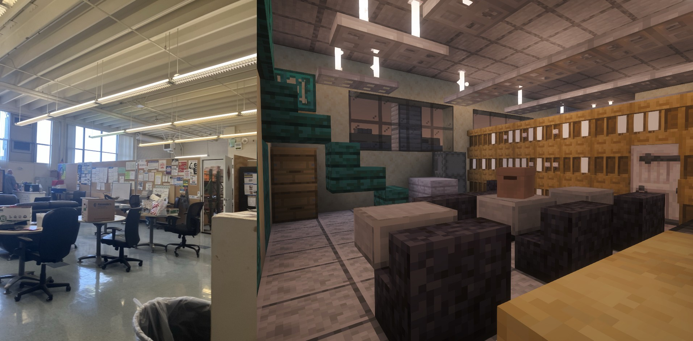
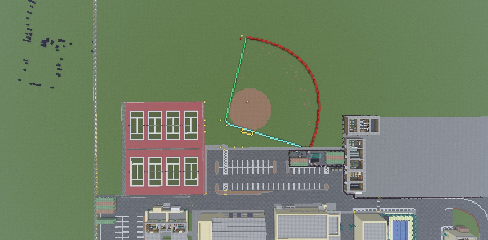

Irvington,
rebuilt in blocks.
A full-scale recreation of Irvington High School, measured to the meter and rebuilt one block at a time — every hallway, classroom and courtyard, on a fully vanilla server.

A walk through the build.
Renders from the finished world — from the front facade down to the smallest classroom details.
How we built it.
Three passes — from raw measurements to finished interiors — got the campus from Google Earth into the game.

Measurements
We used Google Earth to measure distances and altitudes in meters, then translated every reading into blocks at a 1:1 scale.

Visual data
We worked with Irvington students and staff to photograph and film rooms across campus, so every interior matches the real thing.

Construction
We used WorldEdit and CurveBuilding to construct the campus, then Litematica and MapArtCraft to place accurate map art throughout.
Who built it.
A student-run project, built over the school year by a small building team with help from across campus.
Main builders
- Alex Chen Lead builder
- Priya Nair Terrain & landscaping
- Marcus Webb Interiors
- Sofia Ramirez Map art
Other contributors
- Devon Park Photography
- Lily Zhao Reference footage
- Irvington Staff Room access
- Jordan Blake Testing